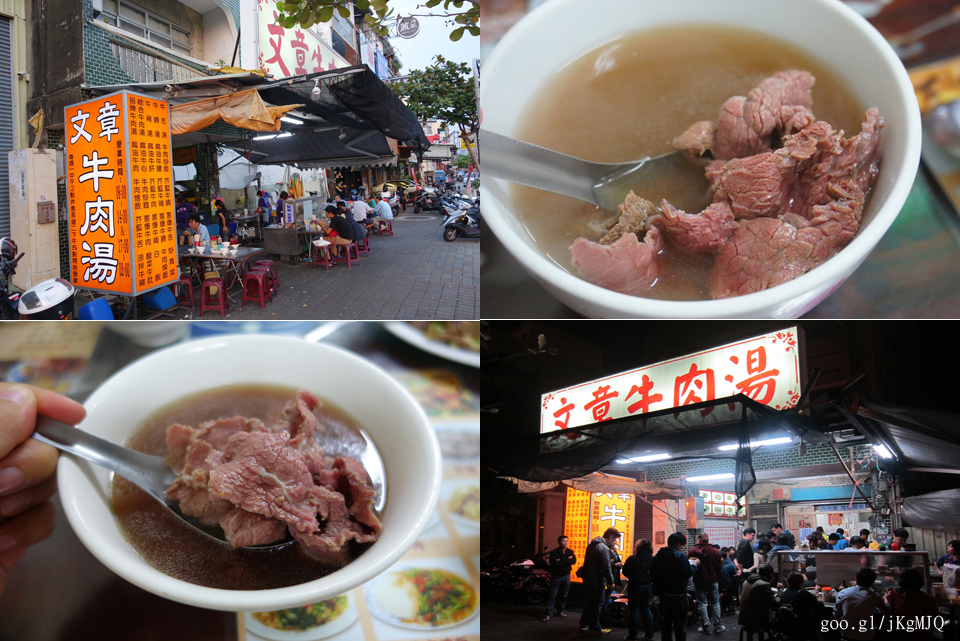
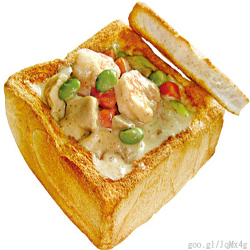
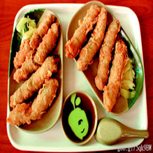
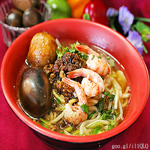
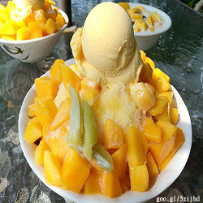
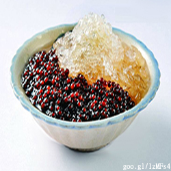
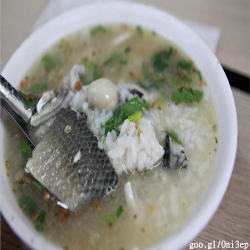
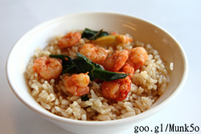
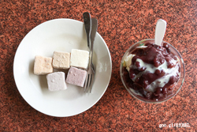

美食導覽
3 days ago by Jane Doe
|  |  |  |
| 棺材板 | 周氏蝦捲 | 度小月擔仔麵 |
棺材板原名為「雞肝板」，由於是用四方形的吐司將中間挖空，填入芶芡的材料，再放上用土司做的蓋子，形狀好像棺材，許六一先生的朋友認為這「雞肝板」形似我們正在挖掘的石板棺，許六一先生聽完後，就突發奇想何不將雞肝板取名為棺材板，也因為這樣，棺材板這名稱，就成了家喻戶曉，代表台南道地傳統的點心小吃。棺材板的做法，首先將特製的麵包炸過，炸完之後將中間挖空，做成棺材板的形狀，之後再裝入熱騰騰香濃滑口的內餡，為了符合現代人的飲食習慣，內餡更是改為奶汁海鮮蔬菜，吃起來不但健康而且有趣。
|
本身為外燴「總舖師」的周氏蝦捲創辦人周進根，原本只是利用沒有外燴工作的閒暇時間在安平賣小吃，沒想到所有項目裡蝦捲賣得特別好，便開始專心經營蝦捲這門生意，後來賣出了名堂，也經營出品牌，現在遊客來安平都得先嚐嚐這味才回家去，可說是安平的小吃奇蹟。周氏蝦捲特選豬腹膜作為包裹蝦捲的外皮，經高溫油炸後，原先分布在腹膜上的油脂溶化，滲入內餡，使得周氏蝦捲嚐起來格外鮮嫩多汁，香味四溢。 另外，本店特製的裹粉，則是周家研製多年的祖傳配方，油炸後皮薄酥脆，即使放至一段時間，也不易變軟或變硬，完美保留蝦捲的美味口感。 資料來源:goo.gl/77oq90 |
清朝光緒年間，以捕魚維生計的洪氏芋頭公，祖先移民來台後，洪公仍繼承祖業，以捕魚維生;惟夏秋季節多颱風，無法出海捕魚，年僅二十多歲的洪公為維生計，乃挑起擔子，到台南水仙宮廟前賣麵，故稱之為『擔仔麵」，賣麵是因為捕魚工作較淡季而度小月，所以洪公乾脆自取其名為『度小月』，現已傳承到第四代。擔仔麵是以甜蝦頭熬成的高湯，再搭上豆芽、香菜再佐以沒有肥肉的肉燥、蒜泥、烏醋、蝦仁，上桌後大致拌一下，用雙手把碗拿起來先喝湯(不可用湯匙)，感受它的味道，再吃麵香氣四溢、回味無窮。 資料來源:goo.gl/AlPcno |
|  |  |  |
| 冰島芒果冰 | 同記豆花店 | 阿星鹹粥 |
南部溫度高，陽光日照充足加上溫暖的南風夾帶海面的濕氣，所帶來的鹽分會增加愛文芒果的甜度，因為有排水性佳的山坡沙質地形，加上天氣適合，是愛文芒果鮮甜好吃的原因，其中最著名的就是冰島愛文芒果冰了，點一份愛文芒果冰，份量真的很大一盤，裡頭放的是芒果冰淇淋、新鮮芒果、芒果汁、情人果、煉乳和挫冰。芒果幾乎把冰都埋起來了，山頂上還擺了顆黃色的芒果冰淇淋，芒果的甜味香氣誘人，而另一款是芒果綿綿冰，是喜歡挫冰的口感，還是綿綿冰的細緻就看各人愛好囉！ "當季的新鮮芒果有多好吃，相信更不用多說了啦~淋上煉乳、芒果汁...，每年夏天最期待的甜點就是她了，每一口都好濃郁、好滿足，再加上超大的份量根本過癮。 |
打開記憶的盒子，回到四十年前，一碗豆花五角的時代，叫賣的鈴鈴聲，淡淡的豆花香，隨即湧現腦海。豆花採用非基因改造黃豆，近40年的經驗，遵循古法製作，豆花及配料都是新鮮熬煮，吃起來更香嫩細軟，營養健康。同記安平豆花現在不僅以 安平豆花 小吃名號創造了歷史，更成為台南府城最重要的小吃標記。來府城一定要來安平嚐嚐好吃的 安平同記豆花。為您介紹其中一款『香濃鮮奶豆花』除了傳統的豆花香外，再加上香醇的林鳳營鮮奶，口感滑潤、奶香帶出豆香，互不搶味，各顯其優，營養加倍，另外一款是『古早粉圓豆花冰』過去農村時代消暑解渴的甜品，粉圓加上碎冰的古早味吃法，QQ彈牙，又有人暱稱青蛙下蛋，令人回味無窮。 資料來源:goo.gl/gN3PLq |
這間位於民族路尾的阿星鹹粥，已經在台南走過了50年的時光，雖然不知能不能排進老店的行列，但是絡繹不絕的人潮，肯定是美味的最佳保證，要觀光客多靠宣傳，但要在地人多就要靠口碑了就像阿星鹹粥，老闆就是堅持使用比較貴一些些的鹹水虱目魚，吃起來會比一般虱目魚更沒土味，阿星鹹粥親民的價格也是老闆的堅持的，因為虱目魚是台南的特產，所以台南的鹹粥大多指的是虱目魚粥，虱目魚粥+油條向來就是我到台南吃粥鹹時的基本款了。資料來源:goo.gl/mxEKUg |
|  |  | |
| 矮仔成蝦仁飯 | 太陽牌冰品 | |
| 蝦仁飯是台南有名的小吃之 一，矮仔成是一間經營至第四代、超過九十年的老店，第一代創始人葉成一老先生因個子不高，早期客人則以「葉成」的諧音稱呼為「矮仔成」，這個綽號因此成為 店名的由來，葉老先生最早從事日本料理的工作，因與蝦販商人合作，後改賣這種自行研發的料理，因此才會有這種類似日式蓋飯做法的蝦仁飯。使用台南安平港與興達港附近海域的火燒蝦，每日使用現撈的新鮮食材、人工剝蝦去腸泥，料理後的蝦仁帶有一點Q彈的口感、新鮮而美味，而米飯的部分則沿用傳統木炭、大灶炊煮方式，煮出來的米飯不但Q軟，還會帶著些許的鍋巴香氣。 資料來源: Goo.gl/uARxL7 |
分享這間位於民權路上的【太陽牌冰品店】，這裡讓人懷念的好口味冰品，很受在地人歡迎呢!光是"太陽牌"這個名稱，聽起來就是很有歷史感的稱呼，走過六十年的歲月，早已累積了許多忠實的客戶，加上最近網路的加持，來吃冰的朋友真是越來越多了。紅豆牛乳霜、草湖芋仔冰，還有各種口味的冰棒，都是店裡的人氣商品，把整塊用牛奶做成的冰，挫成細綿的冰霜來鋪底，自家熬煮紅豆粒粒分明，最後淋上甜蜜的煉乳，就是這碗鎮店之寶的「紅豆牛乳霜」了，可能因為直接用牛奶做成的剉冰，嚐起來奶香更濃郁，更綿密好吃。 資料來源:Goo.gl/PwJ4Te |